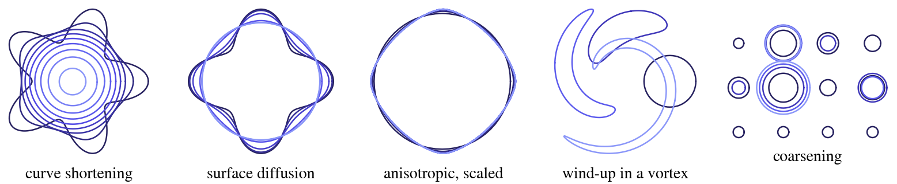
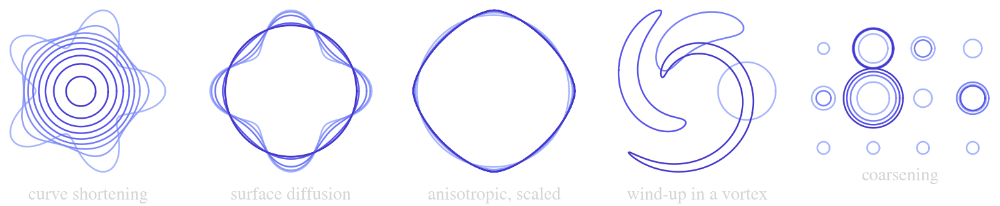

ThetaL.jl


ThetaL evolves closed plane curves. Each curve moves with an outward normal velocity that you compute, and the velocity of each curve may depend on all the curves:
\[(U_1, \dots, U_N) = F(X_1, \dots, X_N; t).\]
ThetaL holds each curve in the θ–L variables of Hou, Lowengrub & Shelley (1994): its tangent angle $\theta(\alpha)$ and length $L$, sampled at $N$ points equally spaced in arclength. It does three things for you:
- Keeps the points at equal arclength, through the tangential velocity, so the grid never tangles or bunches.
- Treats the stiff small scales exactly. You give the growth rate $\sigma(q)$ of a small-scale mode of wavenumber $q$ along the curve (the symbol, $\sigma < 0$ damping:
q -> -q^2for $U = -\kappa$); the step integrates that part exactly with an exponential integrator, so the time step is not tied to the grid spacing. - Integrates rigid motion exactly. The rigid part of each curve's velocity (translation and rotation) is taken out and integrated exactly: a curve that turns or drifts without deforming does so to roundoff at any time step.
It knows nothing of the physics behind $F$. In the Examples it is curve shortening, surface diffusion, anisotropic surface energy, a flow field, or a mean field coupling a dozen particles.
In one call
using ThetaL, DotPlots
X = ξ -> (1 + 0.3cos(5ξ)) .* (cos(ξ), sin(ξ))
U = (X, t) -> -curvature(X)
tspan = (0, 0.1)
sol = evolve(X, U, tspan; dt = 1e-3, symbol = q -> -q^2, saveat = 0.02)
area(sol(0.1)) # ≈ A₀ − 2π·0.1: curve shortening removes area at the rate 2π
dotplot(sol) # the curves in the terminal, colored by timeWhat it offers
| Problems | any number of curves, a velocity that couples them, a stiff symbol, a function of the wavenumber that may also depend on the curve |
| Schemes | exponential Runge–Kutta, ETDRK2 (order 2, with an error estimate) and ExpEuler (order 1); others are a type and a weights function |
| Integrator | exact landing on a time, transactional steps (a rejected step changes nothing), warm-start contexts for expensive velocities |
| Curves | added, removed, replaced or refined between steps; ids stay stable; checkpoints restart a run identically |
| Utilities | distances (close approach), integrals along a curve, the parallel curve, area-preserving projections, the velocity of the tracked points |
Where to go next
- Getting started: installation, one call, a problem and its integrator, the velocity protocol.
- Method: the kinematics, the rigid split, the schemes, the symbols, and the limits.
- Examples: seven scripts, drawn in the terminal.
- API reference and the Code map: every function, and which feature runs it.